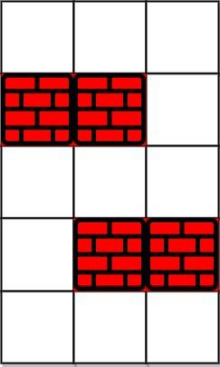
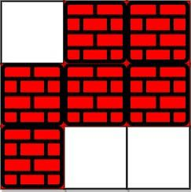

1293. 网格中的最短路径
BFS，状态带上「剩余可消除数」：走到一格时剩得比之前多才重新入队，等于用最大剩余去重。
思路
- 普通 BFS 只记「来没来过」，这里同一个格子在剩余次数不同时值得反复走，状态是
(r, c, 剩余次数)。 - 剪枝：
best[r][c]记录到过该格时的最大剩余；新状态剩余≤ best就直接跳过——剩余更少只会更差。 - 走一步到相邻格：踩到障碍
grid[nr][nc]=1就把剩余减 1，减成负数则不可走。 - 队列按步数分层扩展，第一次出队到终点时的
steps就是最短步数；队空没到就是-1。
图解
最优解
1import java.util.*;2 3class Solution {4 public int shortestPath(int[][] grid, int k) {5 int m = grid.length, n = grid[0].length;6 // best[r][c]：到过 (r,c) 时剩余可消除数的最大值；剩得更少不值得再访7 int[][] best = new int[m][n];8 for (int[] row : best) Arrays.fill(row, -1);9 int[][] dirs = {{1, 0}, {-1, 0}, {0, 1}, {0, -1}};10 // 状态 = {r, c, 剩余可消除数}；队列按步数分层，先出队的是最短路11 Deque<int[]> queue = new ArrayDeque<>();12 best[0][0] = k;13 queue.offer(new int[]{0, 0, k});14 int steps = 0;15 while (!queue.isEmpty()) {16 for (int size = queue.size(); size > 0; size--) {17 int[] cur = queue.poll();18 int r = cur[0], c = cur[1], rem = cur[2];19 if (r == m - 1 && c == n - 1) return steps;20 for (int[] d : dirs) {21 int nr = r + d[0], nc = c + d[1];22 if (nr < 0 || nr >= m || nc < 0 || nc >= n) continue;23 int nrem = rem - grid[nr][nc]; // 走一步：踩到障碍就花掉一次消除24 if (nrem < 0) continue;25 if (nrem > best[nr][nc]) { // 剩得比之前到过时多，才值得再走26 best[nr][nc] = nrem;27 queue.offer(new int[]{nr, nc, nrem});28 }29 }30 }31 steps++;32 }33 return -1;34 }35}题目
给你一个 m * n 的网格，其中每个单元格不是 0（空）就是 1（障碍物）。每一步，您都可以在空白单元格中上、下、左、右移动。
如果您 最多 可以消除 k 个障碍物，请找出从左上角 (0, 0) 到右下角 (m-1, n-1) 的最短路径，并返回通过该路径所需的步数。如果找不到这样的路径，则返回 -1 。
示例 1：

输入： grid = [[0,0,0],[1,1,0],[0,0,0],[0,1,1],[0,0,0]], k = 1
输出：6
解释：
不消除任何障碍的最短路径是 10。
消除位置 (3,2) 处的障碍后，最短路径是 6 。该路径是 (0,0) -> (0,1) -> (0,2) -> (1,2) -> (2,2) -> (3,2) -> (4,2).
示例 2：

输入：grid = [[0,1,1],[1,1,1],[1,0,0]], k = 1 输出：-1 解释：我们至少需要消除两个障碍才能找到这样的路径。
提示：
grid.length == mgrid[0].length == n1 <= m, n <= 401 <= k <= m*ngrid[i][j]是0或1grid[0][0] == grid[m-1][n-1] == 0
题面取自力扣当前版本。
数据快照 2026-11-04。题面版权归力扣所有，本站点仅供本人学习使用，请勿对外发布。